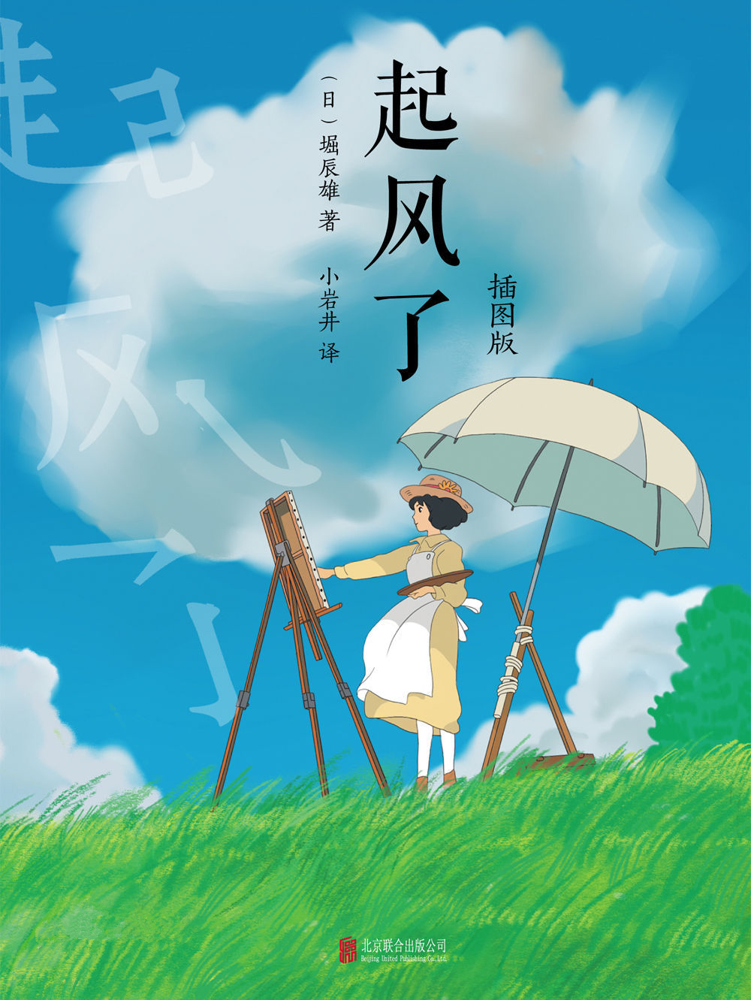

哈尔的移动城堡
哈尔的移动城堡》改编自黛安娜·温尼·琼斯的小说《魔幻城堡》，是由吉卜力工作室、德间书店联合制作，由宫崎骏执导，倍赏千惠子、木村拓哉、美轮明宏、我修院达也等参与配音的动画电影。该片于2004年11月20日在日本上映。该片讲述了少女苏菲被荒野女巫诅咒，变成了一个90岁的老太太，在机缘巧合之下，独自离开小镇的苏菲进入了哈尔的移动城堡，在那里通过与哈尔的朝夕相处，索菲渐渐了解到这个魔法师不为人知的内心世界。
天空之城
《天空之城》是由吉卜力工作室和德间书店联合制作的蒸汽朋克风格的长篇动画电影，于1986年8月2日在日本上映。作品的原作、导演、剧本和角色设定皆由宫崎骏担任，田中真弓、横泽启子、初井言荣、寺田农等担任主要配音。该作也是1985年成立的吉卜力工作室首次公开的剧院作品。作品主要讲述了主人公少女希达和少年帕祖以及军队、海盗等人寻找传说中的天空之城拉普达的故事。
千与千寻
《千与千寻》由吉卜力工作室制作的动画电影，由宫崎骏执导，柊瑠美、入野自由、中村彰男、夏木真理等人参与配音。讲述了千寻意外来到神灵世界后，为了救因惩罚而变成猪的家人，经历许多磨难的故事。2001年7月20日在日本上映。2012年07月28日 CCTV6 佳片有约 播出。2019年6月21日在中国大陆公映。2022年8月5日起在中国台湾地区重映数字修复版本。

起风了
起风了》改编自堀辰雄的同名小说以及漫画，由吉卜力工作室制作，宫崎骏执导的动画电影，由庵野秀明、泷本美织、西岛秀俊、西村雅彦等参与配音。该片于2013年7月20日在日本上映。 该片舞台设定在1920年代的日本，讲述了日本“航空之父”堀越二郎年轻时的技师生活，以及他与少女菜穗子相遇的故事。